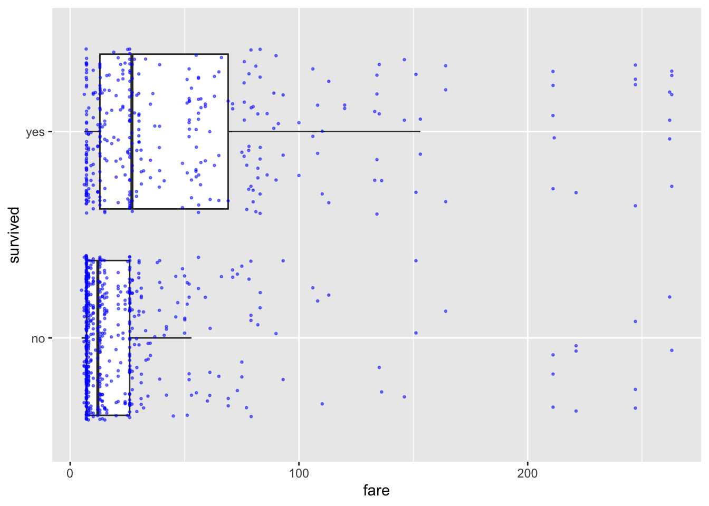
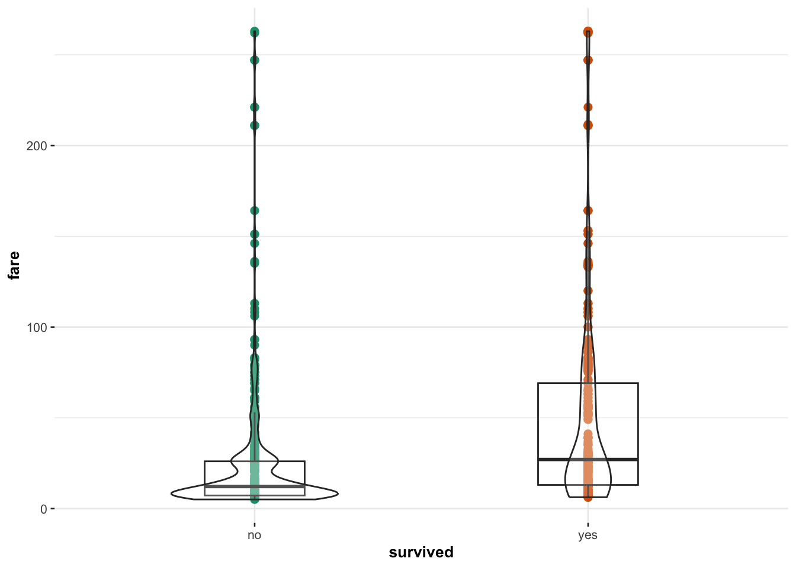
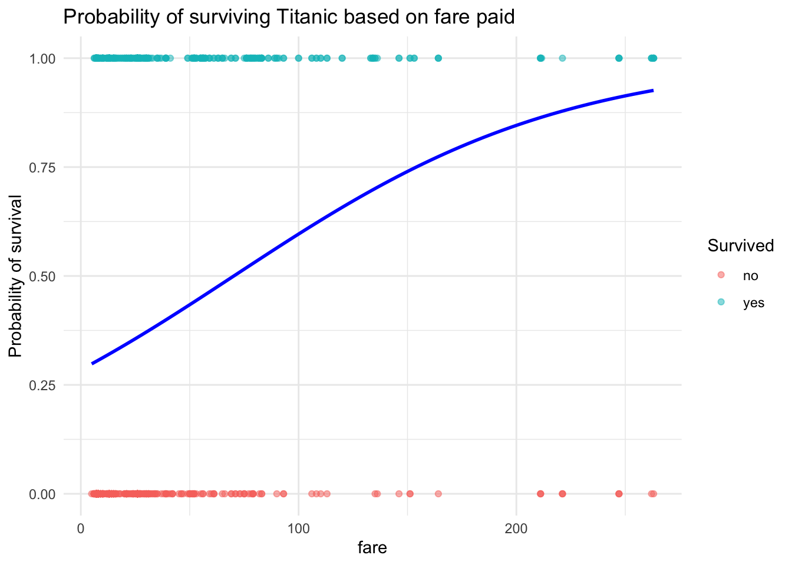
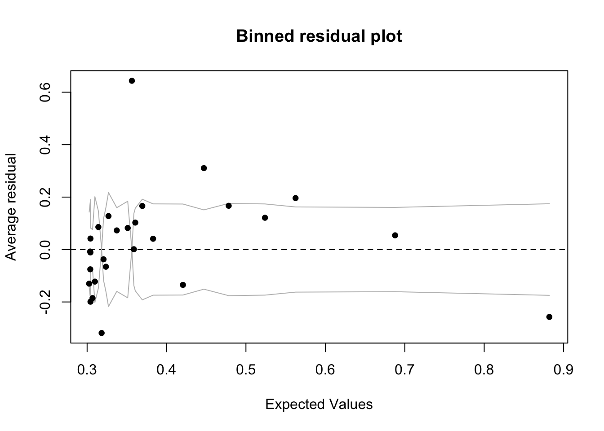

This tutorial covers: - How to load and prepare your data - How to
fit a logistic model (glm) - How to understand the output
(log-odds, odds, probability) - How to assess if your model is a good
fit - How to visualize results - Where to find extra resources if you
want to go further
I first summarise all the code in a cheat-sheet, then go onto explain the output and interpretation in more detail for an example on the Titanic
# PACKAGES-----------------------------------------------
library(DALEX) # for the Titanic data
library(ggplot2)
library(blorr)
library(arm)
library(ggstatsplot)# 1. Load Data
data("titanic", package = "DALEX")
ship_survival <- subset(titanic, fare > 0 & age > 21 & fare < 300)
ship_survival$survived <- as.factor(ship_survival$survived)
# 2. Explore Data
library(ggplot2)
ggplot(ship_survival, aes(x = survived, y = fare)) +
geom_boxplot(outlier.shape = NA) +
geom_jitter(size = 0.7, alpha = 0.5, color = "blue") +
coord_flip()
# 3. Fit Model
model_logit <- glm(survived ~ fare, family = binomial(link = "logit"), data = ship_survival)
# 4. Model Summary
summary(model_logit)
# 5. Interpret Coefficients
cbind(Coefficient_logodds = coef(model_logit), confint(model_logit))
exp(cbind(Coefficient_Odds = coef(model_logit), confint(model_logit)))
round((exp(coef(model_logit)[2]) - 1) * 100, 2)
# 6. Predict Probabilities
ship_survival$modelled_probability <- predict(model_logit, type = "response")
# 7. Visualize
ship_survival$type_num <- ifelse(ship_survival$survived == "yes", 1, 0)
ggplot(ship_survival, aes(fare, type_num)) +
geom_point(alpha = 0.5, size = 0.5) +
stat_smooth(aes(y = modelled_probability), se = FALSE, lwd = 0.5) +
labs(y = "Probability of survival", title = "Probability of surviving Titanic based on fare paid")
# 8. Goodness of Fit
library(blorr)
blr_test_hosmer_lemeshow(model_logit)
blr_model_fit_stats(model_logit)
# 9. Optional Residual Check
library(arm)
binnedplot(fitted(model_logit), residuals(model_logit, type = "response"))Logistic regression is a method used when we’re dealing with categorical dependent variables. It’s particularly useful for predicting the probability of an event occurring, fitting data to a logistic curve. While simple linear regression predicts continuous outcomes, logistic regression focuses on probabilities between 0 and 1, making it perfect for scenarios like yes/no or true/false.
Logistic regression is a Generalized Linear Model (GLM), which expands simple linear regression to handle non-normally distributed response variables. GLMs accommodate various response distributions, like binomial (for logistic regression), Poisson, or gamma distributions, making them adaptable to different data types. Within the GLM framework, logistic regression models the relationship between categorical outcomes and predictors by connecting the linear combination of predictors to the expected value of a transformation of the outcome (via the link function).
Fitting a logistic regression model is very similar to fitting a simple linear regression.
Instead of using lm() (for linear models), we use
glm() (for generalized linear models, or
GLMs).
The glm() command requires you to specify a
family (the type of outcome, like binary or counts).
The link function (how predictors relate to the
expected outcome) is usually set automatically but can be specified
manually.
To fit a logistic regression model, use:
glm(outcome ~ predictors, family = binomial(link = "logit"), data = yourdata)The link function for logistic regression is the logit. It transforms the probability \(p\) into the log-odds:
\[ \text{logit}(p) = \log\left(\frac{p}{1-p}\right) \]
Why use logit? - It stretches out extreme probabilities (close to 0 or 1). - Coefficients are easy to interpret in terms of odds ratios.
Sometimes, we use a probit link instead:
glm(outcome ~ predictors, family = binomial(link = "probit"), data = yourdata)The probit link transforms \(p\) using the inverse cumulative distribution function (CDF) of the standard normal distribution:
\[ \text{probit}(p) = \Phi^{-1}(p) = \text{qnorm}(p) \]
This looks complicated, but it’s just the familiar idea of converting a probability to a z-score (a position on the normal curve).
Why use probit? - It assumes the underlying tendency follows a normal (bell-shaped) process. - It handles extreme probabilities more gently than the logit. - It is often used in economics and models of latent (hidden) decision processes.
Quick rule of thumb: Use logit unless you have a strong reason to expect a normally distributed latent process.
Interpretation: - Both transformations behave similarly around probabilities near 0.5. - Logit stretches extreme probabilities (near 0 or 1) more strongly. - Probit gives a slightly more gentle curve at the extremes.
Using the Titanic dataset from the DALEX package, let’s imagine we want to assess whether wealthier people were more likely to survive the sinking of the Titanic.
First, let’s load and prepare the data:
# Load data
library(DALEX)
data("titanic", package = "DALEX")
ship_survival <- subset(titanic, fare > 0 & age > 21 & fare < 300)
ship_survival$survived <- as.factor(ship_survival$survived)
# Quick look at the data
summary(ship_survival)## gender age class embarked
## female:319 Min. :22.00 1st :282 Belfast : 0
## male :601 1st Qu.:26.00 2nd :207 Cherbourg :195
## Median :32.00 3rd :431 Queenstown : 79
## Mean :35.46 deck crew : 0 Southampton:646
## 3rd Qu.:42.00 engineering crew: 0
## Max. :74.00 restaurant staff: 0
## victualling crew: 0
## country fare sibsp parch
## England :233 Min. : 5.000 Min. :0.0000 Min. :0.0000
## United States:216 1st Qu.: 7.181 1st Qu.:0.0000 1st Qu.:0.0000
## Ireland : 77 Median : 15.015 Median :0.0000 Median :0.0000
## Sweden : 65 Mean : 34.444 Mean :0.3293 Mean :0.3065
## Finland : 31 3rd Qu.: 34.018 3rd Qu.:1.0000 3rd Qu.:0.0000
## (Other) :243 Max. :263.000 Max. :4.0000 Max. :9.0000
## NA's : 55
## survived
## no :567
## yes:353
##
##
##
##
## Tip: Always inspect your data after cleaning. Look for unexpected missing values or strange distributions.
Reminder: Logistic models require the outcome variable to be a factor. If it’s not, R will treat it incorrectly.
Before jumping into modeling, it’s good practice to visualize your data. Let’s see how fare differs by survival.
Jittering Tip: Jittering moves points slightly to avoid overplotting when multiple observations have the same value.
# Boxplot with jittered points
ggplot(ship_survival, aes(x = survived, y = fare)) +
geom_boxplot(outlier.shape = NA) +
geom_jitter(size = 0.5, alpha = 0.5, color = "blue") +
coord_flip()
Alternatively, use ggstatsplot to add automatic
statistical summaries to your plot:
library(ggstatsplot)
ggbetweenstats(data = ship_survival, y = fare, x = survived,
results.subtitle = FALSE, centrality.plotting = FALSE,
point.args = list(size = 2))
Interpretation Box: Passengers who paid higher fares appear more likely to survive, though variability is high.
Now, let’s fit our logistic regression model to see if fare predicts survival.
model_logit <- glm(survived ~ fare,
family = binomial(link = "logit"),
data = ship_survival)Tip:
family = binomial(link = "logit")tells R we’re doing logistic regression.
The easiest way to see the model output is via the standard summary command.
summary(model_logit)##
## Call:
## glm(formula = survived ~ fare, family = binomial(link = "logit"),
## data = ship_survival)
##
## Coefficients:
## Estimate Std. Error z value Pr(>|z|)
## (Intercept) -0.92126 0.09134 -10.086 < 2e-16 ***
## fare 0.01311 0.00185 7.087 1.37e-12 ***
## ---
## Signif. codes: 0 '***' 0.001 '**' 0.01 '*' 0.05 '.' 0.1 ' ' 1
##
## (Dispersion parameter for binomial family taken to be 1)
##
## Null deviance: 1225.2 on 919 degrees of freedom
## Residual deviance: 1157.4 on 918 degrees of freedom
## AIC: 1161.4
##
## Number of Fisher Scoring iterations: 4Interpretation Box: A small p-value suggests that fare has a significant relationship with survival!
p-value Tip: A very small p-value (e.g., < 0.001) means it’s extremely unlikely that the true relationship is zero.
Understanding the model output is critical. Let’s break the meaning of the intercept and slope down in terms of log-odds, odds and probability.
cbind(Coefficient_logodds = coef(model_logit), confint(model_logit, level = 0.95))## Coefficient_logodds 2.5 % 97.5 %
## (Intercept) -0.92125477 -1.102666988 -0.7443837
## fare 0.01311288 0.009642147 0.0169076Log-odds Tip: A positive coefficient means higher fare increases the log-odds of survival.
cbind(Coefficient_Odds = exp(coef(model_logit)), exp(confint(model_logit)))## Coefficient_Odds 2.5 % 97.5 %
## (Intercept) 0.3980193 0.3319845 0.475027
## fare 1.0131992 1.0096888 1.017051Odds Tip: The odds of survival multiply by this factor for every extra pound paid.
round((exp(coef(model_logit)[2]) - 1) * 100, 2)## fare
## 1.32Interpretation Box: Every additional pound increases the ODDS of survival by about 32% (fill in from result).
Let’s predict the probability of survival for someone who paid 50 pounds. If this seems like predicting a random number, this is because the probability changes non-linearly with x, so the exact value will depend on the value of x you choose.
predict(model_logit,
newdata = data.frame(fare = 50),
type = "response")## 1
## 0.433985Formula Reminder: To convert odds back to probability:
\[ p = \frac{\text{odds}}{1 + \text{odds}} \]
Now let’s see how well our model predicts survival.
You can predict things either in log-odds or in probabilities.
The average log-odds that someone survived who paid 50 pounds is:
predict(model_logit,
newdata = data.frame(fare = 50),
type = "link")## 1
## -0.2656106The average odds that someone survived who paid 50 pounds is:
exp(predict(model_logit,
newdata = data.frame(fare = 50),
type = "link"))## 1
## 0.7667376The probability that someone survived who paid 50 pounds is:
predict(model_logit,
newdata = data.frame(fare = 50),
type = "response")## 1
## 0.433985We can also predict this for each person in our sample:
ship_survival$modelled_logodds <- predict(model_logit, type = "link")
ship_survival$modelled_odds <- exp(predict(model_logit, type = "link"))
ship_survival$modelled_probability <- predict(model_logit, type = "response")and plot the output
ggplot(ship_survival, aes(x = fare, y = as.numeric(survived == "yes"))) +
geom_point(aes(color = survived), alpha = 0.5) +
geom_smooth(method = "glm", method.args = list(family = "binomial"),
se = FALSE, color = "blue") +
labs(y = "Probability of survival",
title = "Probability of surviving Titanic based on fare paid",
color = "Survived") +
theme_minimal()
Plot Tip: The line shows how probability increases with fare, but it flattens for very expensive tickets.
Make sure logistic regression assumptions hold: - Outcome must be binary (✔) - Observations must be independent (✔) - Log-odds should vary approximately linearly with continuous predictors (assumed OK here) - No extreme influential outliers (advanced check possible)
Reminder: Logistic regression is very robust, but always sanity-check your assumptions.
Note: These differ slightly from linear regression assumptions, particularly regarding residuals.
Now let’s check if the model fits well overall.
Assessing goodness of fit helps you determine how well your logistic model describes the observed data. There are several different approaches because logistic regression doesn’t have a simple R² value like linear regression.
The Hosmer-Lemeshow test checks whether the observed event rates match the predicted probabilities across groups of observations. It can be found in the blorr library, and there’s a more detailed explanation in the lecture notes.
blr_test_hosmer_lemeshow(model_logit)## Partition for the Hosmer & Lemeshow Test
## --------------------------------------------------------------
## def = 1 def = 0
## Group Total Observed Expected Observed Expected
## --------------------------------------------------------------
## 1 129 32 39.18 97 89.82
## 2 88 16 26.77 72 61.23
## 3 62 10 18.97 52 43.03
## 4 90 25 28.03 65 61.97
## 5 91 25 29.28 66 61.72
## 6 93 41 31.60 52 61.40
## 7 91 37 32.73 54 58.27
## 8 97 41 38.29 56 58.71
## 9 87 61 42.30 26 44.70
## 10 92 65 65.86 27 26.14
## --------------------------------------------------------------
##
## Goodness of Fit Test
## ------------------------------
## Chi-Square DF Pr > ChiSq
## ------------------------------
## 37.1859 8 0.0000
## ------------------------------Interpretation Box: A p-value > 0.05 suggests that there is no evidence of poor fit — the model is fitting the data reasonably well. If the p-value is small (e.g., < 0.05), it indicates a lack of fit and you may need a more complex model.
Pseudo R² measures, such as McFadden’s R², provide a rough sense of model quality. They are not interpreted the same way as R² in linear regression but can be helpful for comparing models. See the class lecture notes for more.
# you can see there are also more advanced ones
blr_model_fit_stats(model_logit)## Model Fit Statistics
## ----------------------------------------------------------------------------------
## Log-Lik Intercept Only: -612.577 Log-Lik Full Model: -578.716
## Deviance(918): 1157.432 LR(1): 67.722
## Prob > LR: 0.000
## MCFadden's R2 0.055 McFadden's Adj R2: 0.052
## ML (Cox-Snell) R2: 0.071 Cragg-Uhler(Nagelkerke) R2: 0.096
## McKelvey & Zavoina's R2: 0.105 Efron's R2: 0.081
## Count R2: 0.667 Adj Count R2: 0.133
## BIC: 1171.081 AIC: 1161.432
## ----------------------------------------------------------------------------------Pseudo R² Tip: Higher values generally suggest a better model, but even good logistic models often have Pseudo R² values well below 0.5. Always use these measures alongside other checks.
Deviance is similar to the sum of squared errors in linear regression. Comparing deviances lets you check whether adding predictors significantly improves model fit. AIC (Akaike Information Criterion) is another tool — lower AIC values mean a better balance of goodness-of-fit and simplicity.
# Another model (hypothetical)
# model_logit2 <- glm(survived ~ fare + sex, family = binomial(link = "logit"), data = ship_survival)
# Compare AIC
# AIC(model_logit, model_logit2)
# Compare Deviance
# anova(model_logit, model_logit2, test = "Chisq")Model Comparison Tip: Lower AIC values or a significant chi-square test when comparing deviances suggest that the more complex model is better. Always weigh improved fit against added model complexity.
If you’re curious, we can use a binned residual plot to check model fit.
Because in logistic regression the residuals are discrete (only a few possible values), we “bin” them into groups of fitted values and average them. This helps to visualize whether the model systematically over- or under-predicts in certain ranges.
library(arm)
binnedplot(fitted(model_logit),
residuals(model_logit, type = "response"),
xlab = "Expected Values",
ylab = "Average residual",
main = "Binned residual plot")
Advanced Tip: Ideally, the binned residuals should hover around zero without clear patterns. Curvature or systematic deviation can suggest a mis-specified model. This is an advanced diagnostic and usually becomes more important in more complex modeling.
And..finished!